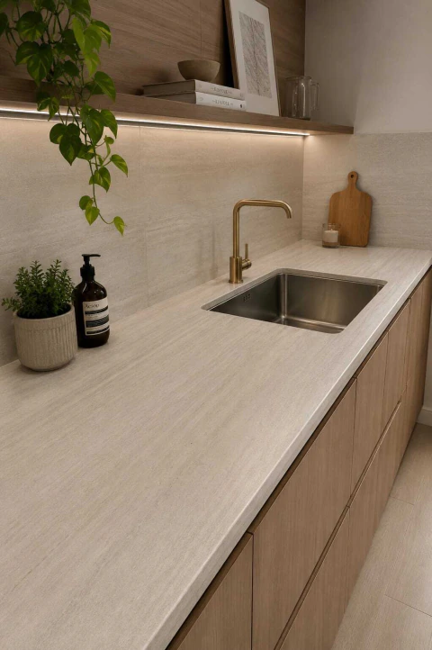
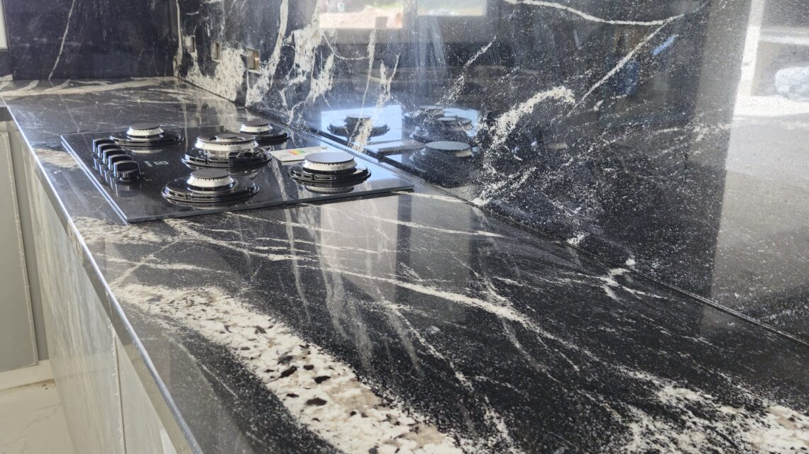
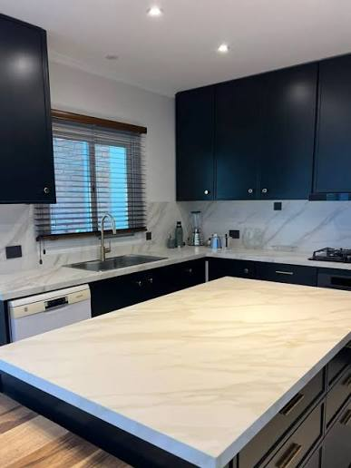

Marmoleria Tinez
Ultimos trabajos realizados

Mesada blanca realizada en Villa Bosch

Mesada negra realizada en San Isidro

Isla de marmol realizada en Belgrano
Inicio
Sobre nosotros
Contacto
Materiales